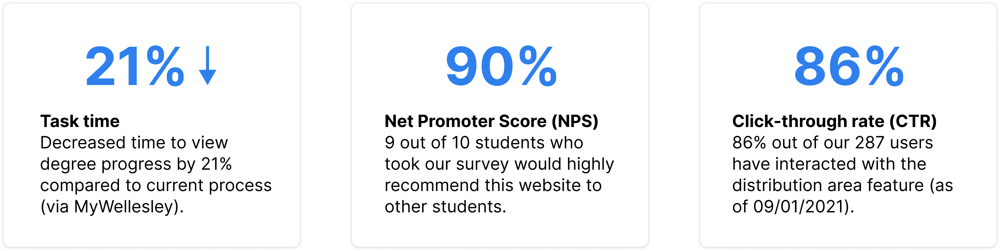

Role
Designed and developed the distribution feature
Team
2 designers and 2 designers and developers
Tools
Figma
Firebase
HTML/JS/CSS
Timeline
4 weeks
Link
Live Website- My Role: Designed/developed the distribution feature
- Team: 2 designers and 2 designers/developers
- Timeline: 4 weeks
- Tools: Figma, Firebase, HTML/CSS/JS
- Live Website: Redesigned Course Browser
Preview
Visualize your degree progress
in one place

Key Features:
- Included "Distribution" feature to mitigate churn, making this website relevant every semester
- Clear visualization of degree progress using Gestalt Principles
- "Quick Add" courses interaction to reduce friction
Success Metrics:
My Process:
Introduction
Status quo course browser
Wellesley’s course browser and Workday both allow students to see available classes. While students mostly use the course browser to search for classes, it has a couple flaws:
- Outdated user interface
- Not user-friendly
- Lacks additional tools to help students plan out their schedules
The Problem and Opportunity
How do create an efficient experience for
students looking to register for classes?
Twice a year, Wellesley students flock to our course browser to search for
classes to take. Since Wellesley is a liberal arts college, students must
take specific classes to fulfill various requirements, such as the Foreign Language Requirement,
Humanities Distribution, and more. However, the problem is that there is no easy or
straightforward way to keep track of degree progress.
With no all-in-one solution available for students to plan their schedules,
we are presented with a design opportunity: How can we provide students with intuitive, clear, and visually appealing tools to help
students search for classes and quantify their degree progress?
People Problem & Generative Research
Streamlining degree progress resources
In order for a student to successfully obtain their degree at Wellesley, they must take specific classes to fulfill all three “Distribution Area” requirements, in addition to other degree requirements such as the Foreign Language and PE requirement.
After talking to 4 students about Wellesley’s degree requirements, students shared the same frustrations about the lack of efficient tools:
Pain Points:
Uncertainty around what classes they need to take and what distributions need to be filled
No centralized website to keep track of degree progress
Unaware of other degree requirements and the exact ways to fulfill them
tl;dr: super duper tedious
How a Wellesley Student determines their degree progress
The five (plus) step process involves many flaws, such as poor user engagement and outdated UI. Additionally, the user’s path involves various different screens and takes more than three clicks to get to their end goal, which is to find their degree progress and figure out what classes to take next.
Insights:
There is no all-in-one solution to track degree progress, so students must rely on multiple resources
Degree requirements are difficult to keep track of given the lack of resources and various number of requirements
Product Decisions
What features would be the most
useful to users?
We decided to include a distribution requirements page that would allow students to enter in their courses and have the website automatically show their progress for various degree requirements. Our goal is to allow users to understand their degree progress and show what requirements they have fulfilled/what they are missing. With the distribution feature, students can go through the following user journey:
This would be integrated in the course browser with other features such as “Rate-My-Professor” and a schedule builder. With the combination of these key features, we aimed to reduce bounce rates from our course browser and streamline the schedule planning process to improve user engagement.
Interaction Design & Iterations
A simple and efficient experience
The most crucial and challenging interaction was adding classes. Because I was in charge of designing and coding the distributions feature, I was well aware of the cost of each design, as well as it’s difficulty development wise. The distribution feature has two parts: 1) Entering course history and 2) Displaying what distributions each course fulfilled.
Step 1: Add Courses
Before we can show students their degree process, we have to understand their course history first. We had two options:
- Have students enter their full course history in the beginning
- Individually input classes
Sketches/wireframe of entering course history
While I mocked up both versions, I felt that the first option, having students enter their full course history, could easily turn users away from the distribution feature. To avoid a long and tedious onboarding process, I opted for the second choice. Thus, I implemented a "quick add feature" so that students could cherry pick classes they took to see what requirements that class could fulfill. The quick add feature is also optimal since it would be quick to implement on the development side.*We dealt with main and general requirements separately because of nuances with how main distribution areas are fulfilled vs. the other requirements
Step 2: View Degree Progress
Final
Iteration 1
Iteration 2
WHY: I used Gestalt Principles to enforce clear grouping of classes and distribution areas. I chose this design for the final MVP because of its clear and simple visualization of degree progress.
WHY: In this first iteration, I felt like it was the most simple layout but had too many dropdowns. This is not easily scannable and lacks dimension/clear hierarchy.
WHY: While the second iteration was more visual, the dropdowns required the user to do more clicking. Additionally, this layout had too many visual elements, lacked hierarchy, and felt overwhelming.
In our first iteration, we designed a sidebar that allowed students to add classes to the “main distribution” and “general" requirements separately, since some requirements were difficult to sort and detect in the back end. After conducting usability tests with 4 different students, all students experienced similiar difficulties.
We decided to combine the main and general distribution forms and create a manual add feature that serves as a low-cost solution to catching the bugs from the removal of the “general distribution” section. Additionally, we made the following adjustments based on user feedback:
Onboarding
Tooltip
Constraints
WHY: Onboarding questionnaire to cover more complicated degree requirements. For example, there are various ways to fulfill the foreign language requirement
WHY: Bring attention to the sidebar and make its function clear to the user (with smooth transitions)
WHY: Disabling buttons and forms to guide the user into filling out the required inputs
Visual Design & Iterations
Clean, user-friendly, and intuitive

Feedback
Provide feedback about the state of the automated add and lets the user know that the back-end is doing its thing
Content Hierarchy
Prioritizing the main distribution area at the top, which is the core of degree requirements
Mapping
Mapping manual add to the representation on the requirement cards
Alignment
Explicit relatedness of the main distribution requirements, since students must take three classes in three different distribution areas
Gestalt Principles
Use of lines, colors, and background to group distribution areas together (Law of Common Region) and provide a consistent representation of classes (Law of Similarity).
We went through various iterations of the manual add feature
and ended up choosing choice 3 (below) because of its simple and intuitive
layout. We tried our best to minimize the amount of steps users
would have to perform to manually add a class (Hick's Law). While the second
design has less steps, it lacks flexibility and customization that
the third design provides.
Because I was also developing this feature, I had to think of various edge
cases that could potentially break the back-end. Due to time constraints,
I decided to implement a low-cost, high-impact solution by including a
toast notification.
If a student tried to add a class they already
entered or input a course code that did not exist, we would notify the
user that the system did not add the particular course. I made sure to
design the toast notification based on existing design patterns and common
color archetypes (red = error/action failed) to make the toast easy to
comprehend.
Takeaways & Next Steps
Positive user feedback
This resource continues to stay relevant, even months after its release!
After sharing the live site to the Wellesley sophomore and junior Facebook groups for beta testing, we currently have 287 users (as of 09/01/21) and expect to have more after releasing it to freshman and seniors. The team released a feedback form, and most of the distribution feature feedback was positive. Student testimonials include:
- “Distributions feature is extremely helpful. It helps me map out the courses I need to take. Specifically, I like the follow up option/question asking me to add additional courses to the language requirement part.”
- “...it was visually easy to see what I was missing and I appreciate that it saves.”
- “It's a great way of visualizing it that makes more sense than the current audit form Wellesley provides.”
- “[The distribution feature is] not available in other Wellesley resources (usually have to do by hand).”
Next Steps
If I had more time on this project, I would do the following things differently:
- Experiment with the quick add bar on the left instead of the right. This would allow the bar to be more discoverable given Z scanning patterns. It would also solve usability problems mentioned earlier.
- Right side drawers are often collapsable, so allowing the quick add bar to expand or collapse could give more room for the degree progress visualization on the left.
Some features that I hope to implement in the future is providing users with recommonded courses and major progress. Additionally, students wanted to see an edit feature to allow them to delete individual classes from the distributions page. To address this issue, we decided to add a reset all button as a temporary solution. Lastly, many students asked for a search feature for the course browser!